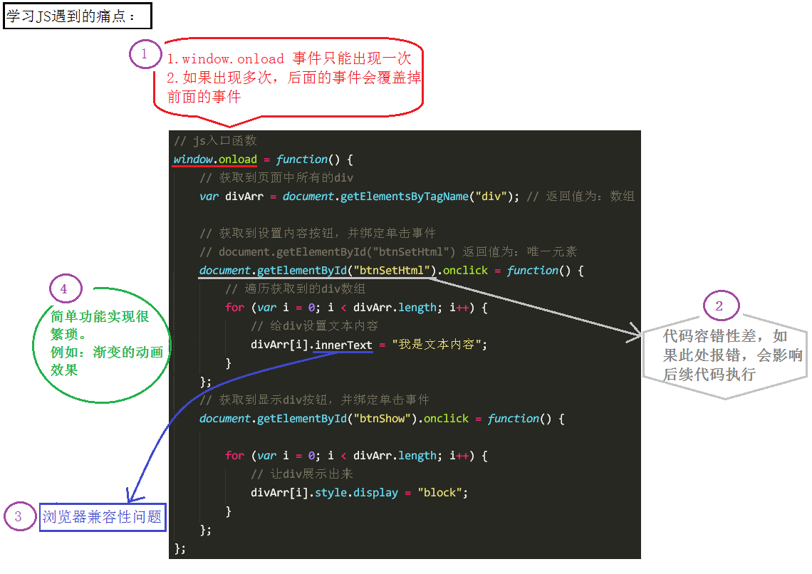
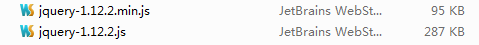
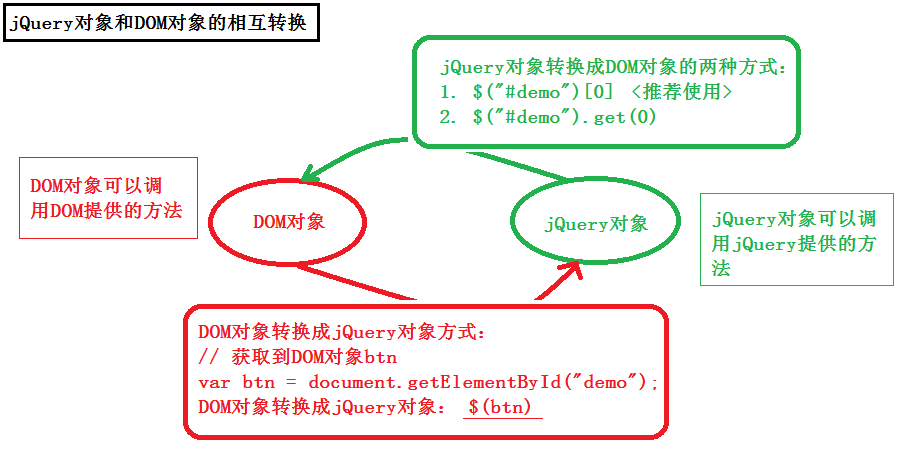

为何要学jQuery
JS的缺点

使用jQuery可以方便地解决这些问题
jQuery是什么
animate.js是我们自己封装的库，而jQuery是别人帮我们封装好的库。
JS库就是把常用的代码放到一个单独的文件中，用的时候直接引用到页面里面就可以了。
jQuery是JS的一个库，封装了开发过程中常用的功能，能够提高开发效率。
jQuery学什么
本阶段主要学习如何使用jQuery，其实就是学习jQuery封装好的一些功能方法，这些方法叫做API（Application
Programming Interface应用程序编程接口）。
这些API的共同特点是：几乎全都是方法。
所以，在使用时，都是方法调用，要加小括号()，小括号里面是相应的参数，参数不同，功能不同。
使用jQuery
使用步骤：
1引包 2写入口函数 3实现功能（事件处理）
入口函数就是指程序运行的时候最开始调用的函数，也就是程序开始的地方
开始使用jQuery
版本介绍
最常用的两个版本：
1.12.x和最新推出的3.0.0
两个版本的区别：3.0版本，不支持IE6、7、8 PC端的开发主要使用1.12.x版本
这几天主要学习1.12.x版本：

未压缩版（开发版）：代码可读性高，推荐在开发和学习环境中使用，方便查看源代码。
压缩版：去除了注释、换行、空格、并且将一些变量替换成了a,b,c之类的简单字符，基本没有可读性，推荐在生产和测试环境中使用，因为文件较小，减少网络压力。
引包注意
第一点：在使用jQuery之前，先把jQuery文件引到页面中来，如果在使用jQuery之前，没有引用jQuery文件，会报错：
第二点：src路径一定要写正确 如果src路径写错，也会报错：
入口函数
jQuery的入口函数:
第一种：
\$(document).ready(function(){ //内容 });
第二种：
\$(function(){ //内容 });
以上两种写法，作用完全相同，用哪个都可以
JS的入口函数：
window.onload = function() { //内容 };
jQuery入口函数与JS入口函数的区别
区别一：书写个数不同
JS入口函数只能出现一次，出现多次会存在事件覆盖的问题。
jQuery的入口函数，可以出现任意多次，不会覆盖。
区别二：执行时机不同
JS入口函数是在所有资源加载完成后，才执行。（包括：页面、外部js文件、外部css文件、图片等）
jQuery入口函数，是在文档加载完成后就执行。文档加载完成指的是：DOM树加载完成后，就可以操作DOM了，不用等到所有的外部资源都加载完成。
\$ 符号
\$就是一个普通的字符，可以用于变量名或函数名
JS命名规范允许出现的字符有：数字、字母、下划线、\$
var \$ = “字符串”;
var \$ = 123;
function \$(){
alert(“我是函数\$”);
}
\$(); // 调用上面我们自定义的函数\$
jQuery中的\$实际是一个函数
// jQuery中使用\$的主要场景
\$(document）.ready(function(){}); // 调用入口函数
\$(function(){}); // 调用入口函数
\$(“#btnShow”) // 获取id属性为btnShow的元素
\$(“div”) // 获取所有的div元素
jQuery里面的\$函数，根据传入参数的不同，进行不同的调用，实现不同的功能。返回的是jQuery对象
jQuery这个JS库，为了避免冲突，给这个最重要的\$函数还起了另外一个名字：jQuery
jQuery函数跟\$函数的关系：jQuery === \$;
jQuery对象
jQuery对象与DOM对象
DOM对象此处指的是：使用JS操作DOM的方法返回的对象
var btn = document.getElementById(“btnShow”); //普通的DOM对象
jQuery对象此处指的是：使用jQuery操作DOM的方法返回的对象
var \$btn = \$(“#btnShow”); // jQuery的DOM对象
jQuery拿到普通的DOM对象后会对其进行包装，让其成为具有jQuery方法的jQuery对象
jQuery对象转DOM对象
第一种方式
var btn1 = \$btn[0]; //通过索引的方式把DOM对象取出来（推荐使用此方式）
第二种方式
var btn2 = \$btn.get(0);//调用get()方法也可以
这两种方式使用哪一种都可以
DOM对象转jQuery对象
\$(普通的DOM对象)
图解：

jQuery选择器（重点）
JS中选择DOM元素的方法
考虑兼容性的话，JS提供的选择DOM的方法只有两个：
| JavaScript选择元素的方法： | |
|---|---|
| document.getElementById(); | 通过id属性获取指定元素 返回唯一的DOM对象 |
| document.getElementsByTagName(); | 通过标签名获取指定元素 返回DOM对象数组（即使只有一个元素） |
JS提供的选择DOM的方法太少，无法满足开发的需要，所以我们使用jQuery选择器来弥补这方面的不足
什么是jQuery选择器
jQuery选择器非常强大，它提供了一组方法，让我们更方便地获取页面中的元素。（类比：CSS的选择器）
强大的原因：jQuery实现了从CSS1到CSS3所有的选择器以及其他常用的选择器
各种选择器之间可以相互代替，所以，平时真正用到的只是最常用的选择器
基本选择器
| 符号(名称) | 说明 | 用法 |
|---|---|---|
| # | Id选择器 | \$(“#btnShow”).css(“color”, “red”); 选择id为btnShow的一个元素（返回值为jQuery对象，下同） |
| . | 类名选择器 | \$(“.liItem”).css(“color”, “red”); 选择含有类liItem的所有元素 |
| 标签名 | 标签选择器 | \$(“li”).css(“color”, “red”); 选择标签名为li的所有元素 |
| 用逗号隔开 | 并集选择器 | \$(“div,p,li”).css(“color”, “red”); div、p、li都会被选中 |
| 挨在一起 | 交集选择器 | \$(“li.current”).css(“color”, “red”); 选择标签名为li并且类名为current的元素 |
\@基本选择器
//id选择器 类名选择器 标签选择器 交集选择器 并集选择器
层级选择器、过滤选择器
| 符号(名称) | 说明 | 用法 |
|---|---|---|
| 层级选择器 | ||
| 空格 | 后代选择器 | \$(“#j_wrap li”).css(“color”, “red”); 选择id为j_wrap的元素的所有后代元素li |
| > | 子代选择器 | \$(“#j_wrap > ul > li”).css(“color”, “red”); 选择id为j_wrap的元素的所有子元素ul的所有子元素li |
| 常用的过滤选择器 | ||
| :eq(index) | 选择匹配元素中索引号为index的一个元素，index从0开始 | \$(“li:eq(2)”).css(“color”, ”red”); 选择li元素中索引号为2的一个元素 |
| :odd | 选择匹配元素中索引号为奇数的所有元素，index从0开始 | \$(“li:odd”).css(“color”, “red”); 选择li元素中索引号为奇数的所有元素 |
| :even | 选择匹配元素中索引号为偶数的所有元素，index从0开始 | \$(“li:odd”).css(“color”, “red”); 选择li元素中索引号为偶数的所有元素 |
筛选选择器（注：都是方法）
| 符号(名称) | 说明 | 用法 |
|---|---|---|
| find(selector) | 查找指定元素的所有后代元素（子子孙孙） | \$(“#j_wrap”).find(“li”).css(“color”, “red”); 选择id为j_wrap的所有后代元素li |
| children(selector) | 查找指定元素的直接子元素（亲儿子元素） | \$(“#j_wrap”).children(“ul”).css(“color”, “red”); 选择id为j_wrap的所有子代元素ul |
| siblings(selector) | 查找所有其他的兄弟元素（不包括自己） | \$(“#j_liItem”).siblings().css(“color”, “red”); 选择id为j_liItem的所有兄弟元素 |
| next(selector) | 查找下一个兄弟元素 | \$(“#j_liItem”).next().css(“color”, “red”); 选择id为j_liItem的下一个兄弟元素 |
| parent(selector) | 查找父元素（亲的） | \$(“#j_liItem”).parent(“ul”).css(“color”, “red”); 选择id为j_liItem的父元素 |
| eq(index) | 查找指定元素的第index个元素，index是索引号，从0开始 | \$(“li”).eq(2).css(“color”, “red”); 选择所有li元素中的第二个 |
jQuery基础课程 — DOM操作
样式操作（重点）
获取样式
// 参数表示要获取的 样式属性名称
\$(selector).css(“font-size”);
此时，会返回”font-size”样式属性对应的值。
设置样式
设置单个样式：
// 第一个参数表示：样式属性名称
// 第二个参数表示：样式属性值
\$(selector).css(“color”, “red”);
设置多个样式：
// 参数为对象
\$(selector).css({“color”: “red”,“font-size”:“30px”});
类名操作（重点）
添加类名
addClass(className) 为指定元素添加类名
\$(selector).addClass(“liItem”);
注意：已经说了是添加类名了，把名字传入即可，不要加点！
移除类名
removeClass(className) 为指定元素移除类名
\$(selector).removeClass(“liItem”); //移除指定类名
\$(selector).removeClass(); //不指定参数，表示移除所有类名
判断有没有某个类名
hasClass(calssName) 判断指定元素是否包含某个类名
\$(selector).hasClass(“liItem”);//返回true或false
切换类名
toggleClass(className) 切换类名，如果没有指定类名就添加，有就移除。
\$(selector).toggleClass(“liItem”);
Data属性
在元素上存放数据,返回jQuery对象。
data(obj) 可传入key-value形式的数据。
key:存储的数据名
value:将要存储的任意数据
一个参数是获取
两个参数是设置
动画函数
jQuery提供的一组常见的动画效果，这些动画是标准的、有规律的效果；同时还提供给我们了自定义动画的功能。
隐藏显示动画
show()方法
形式一：
// 不带参数，没有动画
\$(selector).show();//作用等同于css(“display”, ”block”)
形式二：
//参数为数值，表示：执行动画时长
\$(selector).show(2000);//单位为毫秒（ms），2000毫秒即2秒
形式三：
//参数为字符串，是jQuery预设的值，共有三个，分别是：slow、normal、fast
\$(selector).show(“slow”); //slow：600ms、normal：400ms、fast：200ms
形式四：
// 参数一可以是数值类型或者字符串类型
// 参数二表示：动画执行完后立即执行的回调函数
\$(selector).show(2000, function() {});
hide()方法
\$(selector).hide();
\$(selector).hide(1000);
\$(selector).hide(“slow”);
\$(selector).hide(1000, function(){});
显示隐藏切换
\$(selector).toggle(speed,callback);
jQuery预设的三组动画效果的语法几乎一致：
参数可以有两个，第一个是动画的执行时长(可以是指定字符或毫秒)，第二个是动画执行完成后的回调函数。
滑入滑出动画
滑入效果
作用：让元素以下拉动画效果展示出来
\$(selector).slideDown(speed,callback);
滑出动画
作用：让元素以上拉动画效果隐藏起来
\$(selector).slideUp(speed,callback);
滑入滑出切换
\$(selector).slideToggle(speed,callback);
淡入淡出动画
淡入效果
作用：让元素以淡淡的进入视线的方式展示出来
\$(selector).fadeIn(speed, callback);
淡出效果
作用：让元素以渐渐消失的方式隐藏起来
\$(selector).fadeOut(1000);
淡入淡出切换
作用：通过改变不透明度，切换匹配元素的显示或隐藏状态
\$(selector).fadeToggle(‘fast’,function(){});
淡淡达到效果
改变不透明度到某个值
与淡入淡出的区别：淡入淡出只能控制元素的不透明度从 完全不透明
到完全透明；而fadeTo可以指定元素不透明度的具体值。并且时间参数是必需的！
作用：调节匹配元素的不透明度
// 用法有别于其他动画效果
// 第一个参数表示：时长
// 第二个参数表示：不透明度值，取值范围：0-1
\$(selector).fadeTo(1000, .5); //0全透，1全不透
// 第一个参数为0，此时作用相当于：.css(“opacity”, .5);
\$(selector).fadeTo(0, .5);
动画方法总结
有规律的体现：
jQuery提供的这几个动画效果控制的CSS属性包括：高度、宽度、不透明度。{height:400px;
width:300px; opacity:.4;}
这三个CSS属性的共性是：属性值只有一个（合写的不行），并且这个值是数值（至少经过准换后能变为数值）。
自定义动画
注意：所有能够执行动画的属性必须只有一个数字类型的值。
比如：要改变字体大小，要使用：fontSize（font-size），不要使用：font
动画支持的属性：
http://www.w3school.com.cn/jquery/effect_animate.asp
作用：执行一组CSS属性的自定义动画
// 第一个参数表示：要执行动画的CSS属性（必选）
// 第二个参数表示：执行动画时长（可选）
// 第三个参数表示：动画执行完后立即执行的回调函数（可选）
\$(selector).animate({params},speed,callback);
停止动画
作用：停止当前正在执行的动画
为什么要停止动画？
如果多个动画在同一元素上执行，对这个元素来说，后面的动画将被放到队列中，从而形成动画队列。（联想：排队进站）
上一个动画执行完成，下一个动画才能执行，但是这样的效果有时不是我们想要的。
// 第一个参数表示是否清空所有的后续动画
// 第二个参数表示是否立即执行完当前正在执行的动画
\$(selector).stop(clearQueue,jumpToEnd);
解释：
当调用stop()方法后，当前动画停止于当前样式的只（不会到达目标值），队列中的下一个动画会立即开始。
如果参数clearQueue被设置为true，那么队列中剩余的动画就被删除了，永远不会再执行。
如果参数jumpToEnd被设置为true，那么当前动画会停止，但是参与动画的每一个CSS属性将被立即设置为它们的目标值。比如：slideUp()方法，那么元素会立即隐藏掉。如果存在回调函数，回调函数也会立即执行。
另外：
如果元素动画还没有执行完，此时调用sotp()方法，那么当前动画将会停止。并且由于本次动画没有执行完成，本次动画的回调函数也不会被执行（下一次的会照常执行）。
常用方式：
\$(selector).stop();//当前动画停止于此刻的样式状态 后面的动画继续执行
节点操作（重点）
动态创建元素
// \$()函数的另外一个作用：动态创建元素
var \$span = \$(“\
添加元素（重点）
append()（重点）
作用：在被选元素内部的最后一个子元素（或内容）后面插入内容（页面中存在或者创建出来的元素都可以）
//在\$(selector)中追加\$node
\$(selector).append(\$node);
//在\$(selector)中追加div元素，参数为htmlString
\$(selector).append(‘\
如果是页面中存在的元素，那么调用append()后，会把这个元素从原先的位置移除，然后再插入到新的位置。
如果给多个目标追加一个元素，append()方法内部会将这个元素复制多份，然后追加到多个目标中。（最好不要这么做）
常用参数：htmlString 或 jQuery对象
不常用操作（了解即可）：（用法跟append()方法基本一致）
prepend()
作用：在元素的第一个子元素前面追加内容或节点
\$(selector).prepend(node);
after()
作用：在被选元素之后，作为兄弟元素插入内容或节点
\$(selector).after(node);
before()
作用：在被选元素之前，作为兄弟元素插入内容或节点
\$(selector).before(node);
html创建元素
作用：设置或返回所选元素的html内容（包括 HTML 标记）
设置内容的时候，如果是html标记，会动态创建元素，此时作用跟JS里面的
innerHTML属性相同
// 动态创建元素
\$(selector).html(‘\
// 获取html内容
\$(selector).html();
清空元素
//清空指定元素的所有子元素
\$(selector).empty();
\$(selector).html(“”);
//”自杀”把自己（包括所有内部元素）从文档中删除掉
\$(selector).remove();
复制元素
// 复制\$(selector)所匹配到的元素
// 返回值为复制的新元素
\$(selector).clone();
推荐
使用html(“\
使用html(“”)清空元素（但是这样无法清除对象身上的事件，造成内存泄漏（少量的无所谓））
代码/文本/值
html() 方法
作用：设置或获取匹配元素的代码内容
\$(selector).html(); //获取
\$(selector).html(‘\
text() 方法
作用：设置或获取匹配元素的文本内容
\$(selector).text();//获取操作不带参数
（注：会把所有匹配到的元素内容拼接为一个字符串，不同于其他获取操作！）
\$(selector).text(“我是内容”);//设置操作带参数，参数表示要设置的文本内容
val()方法
作用：设置或返回表单元素的值，例如：input,select,textarea的值
\$(selector).val();// 获取匹配元素的值，只匹配第一个元素
\$(selector).val(“具体值”);// 设置所有匹配到的元素的值
属性操作
设置属性：
// 第一个参数表示：要设置的属性名称
// 第二个参数表示：该属性的值
\$(selector).attr(“title”, “传智播客”);
获取属性：
// 参数为：只传入要获取的属性的名称即可返回指定属性的值
\$(selector).attr(“title”);
移除属性：
// 参数为：要移除的属性的名称
\$(selector).removeAttr(“title”);
注意：表单元素中属性值为布尔值的属性，如checked、selected、disabled要使用.prop()方法
\$(selector).prop(“checked”); //获取
\$(selector).prop(“checked”, true ); //设置
细节参考：http://api.jquery.com/prop/
尺寸位置
尺寸操作
在jQuery中有一套可以非常方便的操作元素尺寸的系列方法。
height()与width()：设置或者返回元素的高度及高度,返回结果是数值类型。
innerWidth()与innerHeight()：包括padding
outerWidth()与outerHeigth()：包括padding、border
outWidth(true)与outerHeight(true)：包括padding、border、margin
注：只有height()与width（）可以进行设置操作，innerWidth（）、outWidth（）都是只读属性，只能获取、不能设置。
位置操作
scrollTop()
作用：获取或者设置元素垂直方向滚动的位置
//获取
\$(selector).scrollTop();
//设置，参数为数值类型
\$(selector).scrollTop(100);
scrollLeft()
作用：获取或者设置元素水平方向滚动的位置
//获取
\$(selector).scrollLeft();
//设置，参数为数值类型
\$(selector).scrollLeft(100);
offset()
作用：获取或设置元素相对于document左上角的位置
//无参数表示获取，返回值为：{left:num, top:num}，值是相对于document的位置
\$(selector).offset();
//有参数表示设置，参数推荐使用数值类型
\$(selector).offset({left:100, top: 150});
注意：使用offset操作，如果元素没有设置定位(默认position:static)，则会把position修改为relative.会修改left、top
position()
获取相对于其最近的有定位的父元素的位置。相当于之前JS中的offsetLeft和offsetTop
// 获取，返回值为对象：{left:num, top:num}
\$(selector).position();
注意：position方法只能获取，不能设置
序列化表单提交内容
serialize()
序列表表格内容为字符串。
serializeArray()
序列化表格元素 (类似 ‘.serialize()’ 方法) 返回 JSON 数据结构数据。
返回的JSON对象是由一个对象数组组成的，其中每个对象包含一个或两个名值对——name参数和value参数（如果value不为空的话）。
jQuery基础课程 — 其他知识
jQuery事件
事件机制
jQuery的事件机制，指的是：jQuery对JavaScript操作DOM事件的封装，包括了：事件绑定、事件解绑、事件触发。
JavaScript：
btn.onclick = function() {}; //给这个按钮绑定事件
jQuery：
\$btn.click(function() {}); //给按钮绑定事件
click是一个方法，内部是对onclick事件的封装
事件的发展历程（了解）
简单事件绑定 >> bind事件绑定 >> delegate事件绑定 >> on
简单事件绑定：
click(handler) 单击事件
dbclick(handler) 双击事件
blur(handler) 失去焦点事件
focus(handler) 获得焦点事件
mouseenter(handler) 鼠标进入事件
mouseleave(handler) 鼠标离开事件
keydown(handler) 键盘按下事件
keyup(handler) 键盘弹起事件
bind方式
作用：给匹配到的元素直接绑定事件（不推荐，1.7以后的jQuery版本被on取代）
// 绑定单击事件处理程序
第一个参数：事件类型
第二个参数：事件处理程序
\$(“p”).bind(“click mouseenter”, function(e){
//事件响应方法
});
优点：可以同时绑定多个事件，比如：bind(“mouseenter mouseleave”, function(){})
缺点：仍然无法给动态创建的元素绑定事件
delegate方式
作用：给匹配到的元素绑定事件，对支持动态创建的元素有效（特点：节省资源，支持动态创建的元素）（不推荐，1.7以后的jQuery版本被on取代）
// 第一个参数：selector，要绑定事件的元素
// 第二个参数：事件类型
// 第三个参数：事件处理函数
\$(“.parentBox”).delegate(“p”, “click”, function(){
//为 .parentBox下面的所有的p标签绑定事件
});
与前两种方式最大的优势：减少事件绑定次数提高效率，支持动态创建出来的元素绑定事件
事件绑定（重点）
我们现在用on的方式来绑定事件（最现代的方式，强烈建议使用的方式）
jQuery1.7版本后，jQuery用on统一了所有的事件处理的方法
作用：给匹配的元素绑定事件，包括了上面所有绑定事件方式的优点
语法：
//
第一个参数：events，绑定事件的名称可以是由空格分隔的多个事件（标准事件或者自定义事件）
// 第二个参数：selector, 执行事件的后代元素
// 第三个参数：data，传递给处理函数的数据，事件触发的时候通过event.data来使用
// 第四个参数：handler，事件处理函数
\$(selector).on(events[,selector][,data],handler);
// 表示给\$(selector)绑定事件，当必须是它的内部元素span才能执行这个事件
\$(selector).on( “click”,“span”, function() {});
// 绑定多个事件
// 表示给\$(selector)匹配的元素绑定单击和鼠标进入事件
\$(selector).on(“click mouseenter”, function(){});
事件解绑
unbind() 方式（废弃）
作用：解绑 bind方式绑定的事件
\$(selector).unbind(); //解绑所有的事件
\$(selector).unbind(“click”); //解绑指定的事件
undelegate() 方式（废弃）
作用：解绑delegate方式绑定的事件
\$( selector ).undelegate(); //解绑所有的delegate事件
\$( selector).undelegate( “click” ); //解绑所有的click事件
off解绑on方式绑定的事件（重点）
//解绑 所有类型 所有事件（直接绑定的和委托的都解绑）
\$(selector).off();
//解绑 click事件 所有事件（直接绑定的和委托的都解绑）
\$(selector).off(“click”);
//解绑 click事件 只解绑委托的
\$(selector).off( “click”, “**” );
//第二个参数表示的是要找委托的 选择器“**”表示选择所有委托的
事件触发
简单事件触发
\$(selector).click(); //触发 click事件
trigger方法触发事件
\$(selector).trigger(“click”);
triggerHandler触发 事件响应方法，不触发浏览器行为
比如:文本框获得焦点的默认行为
\$(selector).triggerHandler(“focus”);
jQuery事件对象介绍
event.type 事件类型：click，dbclick…
event.which 鼠标的按键类型：左1 中2 右3
event.pageX 鼠标相对于页面左边的位置
event.target 触发该事件的元素（事件目标）
event.currentTarget 当前对象（相当于this）
event.delegateTarget 代理对象
event.keyCode 键盘按键代码
event.stopPropagation()； 阻止事件冒泡
event.preventDefault(); 阻止默认行为
return false;
event.data 传递给事件处理程序的额外数据
return false; // JQ的事件中return false可以阻止冒泡和默认行为 JS中只阻止默认行为
this：事件处理函数被哪个元素对象调用，this就指向哪个元素对象。
jQuery补充（了解）
链式编程
// 链式编程代码示例
\$(“li”).parent(“ul”).parent().siblings(“div”).children(“div”).html(“内容”);
链式编程原理：return this;
通常情况下，只有设置操作才能把链式编程延续下去。因为获取操作的时候，会返回获取到的相应的值，无法返回
this
end(); // 结束当前链最近的一次过滤操作，并且返回匹配元素之前的一次状态。
隐式迭代
隐式迭代：在方法的内部会对匹配到的所有元素进行循环遍历，执行相应的方法；无需我们再手动地进行循，方便我们使用。
// 设置操作
\$(“div”).css(“color”, “red”);
如果是获取多个元素的值，大部分情况下返回第一个元素的值。
// 获取操作
\$(“div”).css(“color”); // 返回第一个元素的值
each方法
大部分情况下是不需要使用each方法的，因为jQuery的隐式迭代特性。但是如果要对每个元素做不同的处理，这时候就要用each方法了。
作用：遍历jQuery对象集合，为每个匹配的元素执行一次指定函数
// 参数一表示当前元素在所有匹配元素中的索引号
// 参数二表示当前元素（DOM对象）
\$(selector).each(function(index,element){});
多库共存
此处多库共存指的是：jQuery占用了\$
和jQuery这两个变量名。当在一个页面中引用了jQuery，并且引用的其他库（或者其他版本的jQuery库）中也用到了\$或者jQuery这两个变量名，这时就有了多库共存的问题。
// 模拟另外的库使用了 \$ 这个变量名。此时，就与jQuery库产生了冲突
var \$ = { name : “itecast” };
解决方式：
//让jQuery释放对\$的控制权，让其他库能够使用\$。此后，只能用jQuery来调用jQuery提供的方法
\$.noConflict();
jQuery插件（了解）
jQuery虽然功能强大，但也不是包含所有的功能，可以通过插件来扩展它的功能：
当你需要某个插件的时候，你可以“安装”到jQuery上面，然后使用。
当你不再需要这个插件，那你就可以从jQuery上“卸载”它。
（联想：手机软件，安装的app就好比插件，用的时候安装上，不用的时候卸载掉）
使用插件
jQuery.color.js
animate()自定义动画：不支持背景的动画效果animate动画支持的属性列表
使用步骤：
1.引入jQuery文件
2.引入插件
3.使用插件
制作插件
如何创建jQuery插件：http://learn.jquery.com/plugins/basic-plugin-creation/
为\$函数扩展方法
\$.pluginName = function() {};
为jQuery对象扩展方法
\$.fn. pluginName = function() {};
jQueryUI
使用场景：网站的管理后台
jQueryUI专指由jQuery官方维护的UI（用户接口）方向的插件。
官方API：http://api.jqueryui.com/category/all/
其他教程：jQueryUI教程
基本使用:
1.引入jQueryUI的样式文件
2.引入jQuery
3.引入jQueryUI的JS文件
4.使用jQueryUI功能